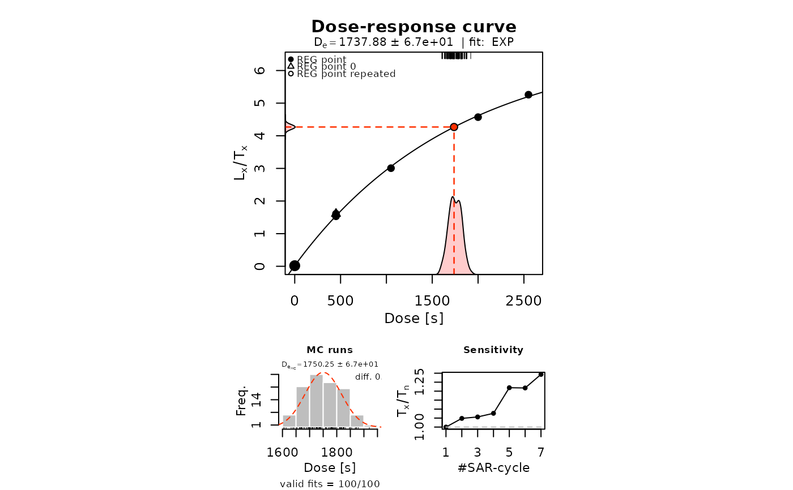
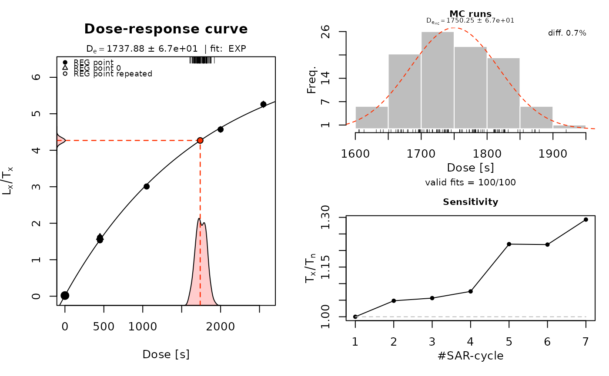
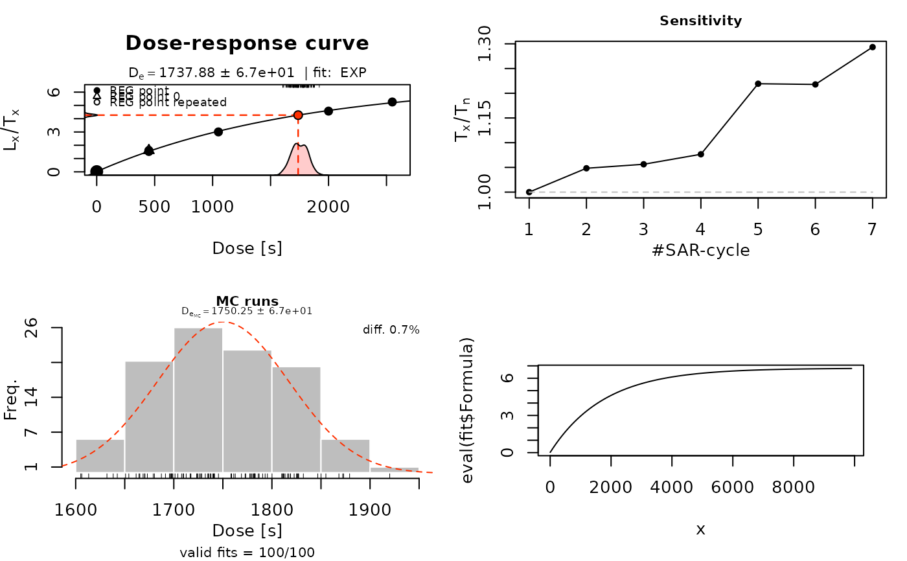
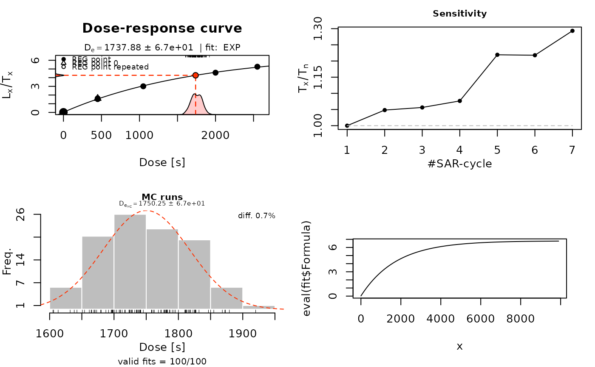

Plot a dose-response curve for luminescence data (Lx/Tx against dose)
Source:R/plot_DoseResponseCurve.R
plot_DoseResponseCurve.RdA dose-response curve is produced for luminescence measurements using a regenerative or additive protocol as implemented in fit_DoseResponseCurve.
Usage
plot_DoseResponseCurve(
object,
plot_extended = TRUE,
plot_singlePanels = FALSE,
verbose = TRUE,
...
)Arguments
- object
RLum.Results (required): An object produced by fit_DoseResponseCurve.
- plot_extended
logical (with default): If
TRUE, 3 plots on one plot area are provided:growth curve,
histogram from Monte Carlo error simulation and
a test dose response plot.
If
FALSE, just the growth curve will be plotted.- plot_singlePanels
logical (with default): single plot output (
TRUE/FALSE) to allow for plotting the results in single plot windows. Ignored ifplot_extended = FALSE.- verbose
logical (with default): enable/disable output to the terminal.
- ...
Further graphical parameters to be passed (supported:
main,mtext,xlim,ylim,xlab,ylab,legend,reg_points_pch,density_polygon(TRUE/FALSE),density_polygon_col,density_rug(TRUE/FALSE)),box(TRUE/FALSE)
How to cite
Kreutzer, S., Dietze, M., Colombo, M., 2025. plot_DoseResponseCurve(): Plot a dose-response curve for luminescence data (Lx/Tx against dose). Function version 1.0.4. In: Kreutzer, S., Burow, C., Dietze, M., Fuchs, M.C., Schmidt, C., Fischer, M., Friedrich, J., Mercier, N., Philippe, A., Riedesel, S., Autzen, M., Mittelstrass, D., Gray, H.J., Galharret, J., Colombo, M., Steinbuch, L., Boer, A.d., 2025. Luminescence: Comprehensive Luminescence Dating Data Analysis. R package version 1.1.0. https://r-lum.github.io/Luminescence/
References
Berger, G.W., Huntley, D.J., 1989. Test data for exponential fits. Ancient TL 7, 43-46.
Guralnik, B., Li, B., Jain, M., Chen, R., Paris, R.B., Murray, A.S., Li, S.-H., Pagonis, P., Herman, F., 2015. Radiation-induced growth and isothermal decay of infrared-stimulated luminescence from feldspar. Radiation Measurements 81, 224-231.
Pagonis, V., Kitis, G., Chen, R., 2020. A new analytical equation for the dose response of dosimetric materials, based on the Lambert W function. Journal of Luminescence 225, 117333. doi:10.1016/j.jlumin.2020.117333
Author
Sebastian Kreutzer, Institute of Geography, Heidelberg University (Germany)
Michael Dietze, GFZ Potsdam (Germany)
Marco Colombo, Institute of Geography, Heidelberg University (Germany)
, RLum Developer Team
Examples
##(1) plot dose-response curve for a dummy dataset
data(ExampleData.LxTxData, envir = environment())
fit <- fit_DoseResponseCurve(LxTxData)
#> [fit_DoseResponseCurve()] Fit: EXP (interpolation) | De = 1737.88 | D01 = 1766.07
plot_DoseResponseCurve(fit)

##(1b) horizontal plot arrangement
layout(mat = matrix(c(1,1,2,3), ncol = 2))
plot_DoseResponseCurve(fit, plot_singlePanels = TRUE)

##(2) plot the dose-response curve with pdf output - uncomment to use
##pdf(file = "~/Dose_Response_Curve_Dummy.pdf", paper = "special")
plot_DoseResponseCurve(fit)
 ##dev.off()
##(3) plot the growth curve with pdf output - uncomment to use, single output
##pdf(file = "~/Dose_Response_Curve_Dummy.pdf", paper = "special")
plot_DoseResponseCurve(fit, plot_singlePanels = TRUE)
##dev.off()
##(4) plot resulting function for given interval x
x <- seq(1,10000, by = 100)
plot(
x = x,
y = eval(fit$Formula),
type = "l"
)

##dev.off()
##(3) plot the growth curve with pdf output - uncomment to use, single output
##pdf(file = "~/Dose_Response_Curve_Dummy.pdf", paper = "special")
plot_DoseResponseCurve(fit, plot_singlePanels = TRUE)
##dev.off()
##(4) plot resulting function for given interval x
x <- seq(1,10000, by = 100)
plot(
x = x,
y = eval(fit$Formula),
type = "l"
)
